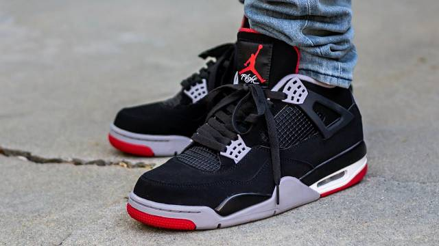

The Air Jordan 4 "Bred," also known as "Black/Red," is a timeless classic in the Jordan lineup, originally released in 1989. This iconic sneaker features a sleek black nubuck upper, complemented by vibrant red accents on the eyelets, Jumpman logo, and outsole. **Key Features:** - **Colorway**: The predominant black gives the shoe a versatile and sophisticated look, while the red highlights add a pop of color, making it stand out. - **Design Elements**: The Air Jordan 4 is known for its distinctive mesh panels on the sides and the unique wing eyelets, providing both style and functional support. - **Comfort and Performance**: Equipped with a visible Air unit in the heel, the Jordan 4 offers responsive cushioning and comfort for both casual wear and performance on the court. - **Cultural Impact**: The "Bred" colorway has a significant cultural footprint, being worn by Michael Jordan during key moments of his career, including the 1989 NBA Playoffs, and has since become a staple in sneaker culture. Overall, the Air Jordan 4 "Bred" remains a highly sought-after sneaker, celebrated for its classic design, rich history, and enduring appeal among sneakerheads and basketball fans alike.
